Onboarding redesign, for approval
Renders only; nothing is built yet. They replace the setup checklist, the New Harness box and the picker's badges you marked up. The copy, numbers and session names in them are examples.
1. First launch: a tour while Harness sets up
Slides advance every ~7 s, and the arrow or dots move them by hand. The bottom line is the only sign of the install: one sentence, a thin bar and a time left. "Details" opens the log for the rare person who wants it; a failure turns that line red with Retry.
All your machines,
one window.
Slide 1 of 5: machines. The bottom line names no component: no tmux, no Node, no CLI. ▸ opens the log.
All your agents, side by side.
✓ middleware.ts
running tests…
✓ 3 files changed
done in 41 s
writing…
? needs your answer
Slide 2: agents. Four live panes, each a different agent.
Sessions that keep going.
› migrate the users table
✓ migration 0042 written
─── Mac restarted ───
Today 09:14 · resumed
› now backfill the emails
working…
Slide 3: persistent sessions.
Your agents in your pocket.
✓ built
deploying…
Slide 4: mobile. Could include a QR code to get the app.
A dial for your agents.

Slide 5: device; setup done. When the bar finishes, Open Harness appears. Proposed: it also opens by itself once the current slide ends.
All your agents, side by side.
↓ Harness runtime 112 of 187 MB
· Agents: Claude Code found, signed in. Nothing else to download.
Details open. The same information as today, folded away. The last line is where "Claude Code found, nothing else to download" (or "Downloading OpenCode") would go.
What changes underneath: the setup checklist, its first-task field, the "Next: start your first harness" footer and Copy diagnostics leave the first screen. Copy diagnostics moves into Details. OpenCode downloads only when the computer has no Claude Code, Codex or OpenCode yet. #1067 already checks for that.
2. Arrival: someone with no agents yet
No New Harness box. Harness opens one tab with a small game OpenCode has already made, the game running beside it, and the composer focused on one question.
✓ index.html · game.js · style.css
Space Dodge is ready: arrow keys to move, dodge the rocks,
the score goes up every second. It's running on the right.
What would you like to change in the game?
Try: "make the rocks faster", "add a high score", "make the ship blue"
How: the app ships the finished project and its OpenCode session. On first run both are copied to ~/harnesses/space-dodge, and the pane opens that session, so OpenCode's answer is already on screen.
The preview is a web-page pane of index.html. Only for someone with no Claude Code, Codex or OpenCode and no sessions.
To check before building: that an OpenCode session can be imported on another computer and resumed, and that the preview pane exists or can be added cheaply.
3. Arrival: someone who already uses Claude Code and Codex
Their recent work opens by itself, one tab per project. Each tab has that project's latest 1–2 Claude Code and 1–2 Codex sessions side by side. The first screen shows several agents together.
› make the sign-in page match the new brand
✓ SignIn.tsx, theme.ts updated
Want me to update the screenshots in the docs too?
› find why the build is slow
✓ 3 fixes, build 94 s → 31 s
Opened PR #418.
› add annual pricing toggle
✓ done, tests pass
› write e2e tests for checkout
? stopped: needed a test card number
How: Which sessions: the last 14 days of Claude Code and Codex sessions, grouped by project folder. That's at most 3 tabs (the busiest projects) and at most 4 panes each (2 per agent, most recent first). Resumed lazily: each pane shows its conversation straight away, and the agent itself starts only when you type in it, so 9 panes don't start 9 agents. The numbers: the limits come from the usage reader the app already has (Models menu). The session counts come from the session history Harness already indexes. For someone with only Claude Code, the same, with Claude Code panes only.
4. Choosing an agent: no badges
The picker lists agents and nothing else. Anything an agent needs is handled after you pick it, inside its own pane.

CopilotThe picker: agents you use first, then the rest. No status words.
After picking one that isn't installed: its pane opens at once with one progress line, and the message is sent when it starts. For one that needs a sign-in, the pane shows that agent's own sign-in screen.
Checked: can it be built (2026-10-08)
Bundled OpenCode session (screen 2): yes. In a fresh macOS VM, opencode export produced a 33 KB JSON of a real
game session. opencode import in a brand-new home under a different folder made it the only session there, and
opencode --session <id> opened with the whole conversation on screen. Two things for the build: rewrite the
folder paths in the JSON to the person's own folder before importing, and hand-curate the transcript. The one OpenCode
made ran python3, which on a fresh Mac raises Apple's developer-tools dialog.
Game preview pane: yes, with modest work. The app already has web panes (WKWebView, web_pane_panel.dart)
for harness viewers; a local index.html needs a URL the pane can load.
Recent sessions and counts (screen 3): yes. The daemon's session_search, asked with a time and no words,
returns recent Claude Code and Codex sessions with engine, folder, title and last activity. The app's welcome page already
reads it (welcome_sessions.dart). The limits come from the usage controller behind the Models menu.
Opening panes without starting 9 agents: needs a "show the conversation, start the agent on first keystroke" pane,
which does not exist yet. It is the largest piece of new work here. Until it exists, the cap could be 2 live panes per tab.
For you to decide
1. When setup finishes mid-tour: open Harness by itself at the end of the current slide (proposed), or wait for Open Harness?
2. Existing users: one tab per project with mixed agents (rendered), or one tab per agent?
3. The starter project for new users: a game (rendered), or something work-like, such as a small landing page?
4. The welcome strip: stays until closed (rendered with ×), or disappears after the first message?
5. Signed out of Harness: the welcome shows only this Mac's agents, so no sign-in is needed. OK?